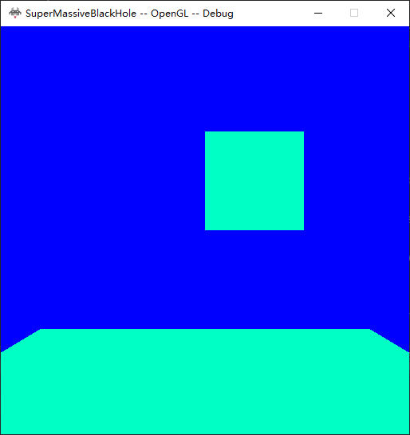
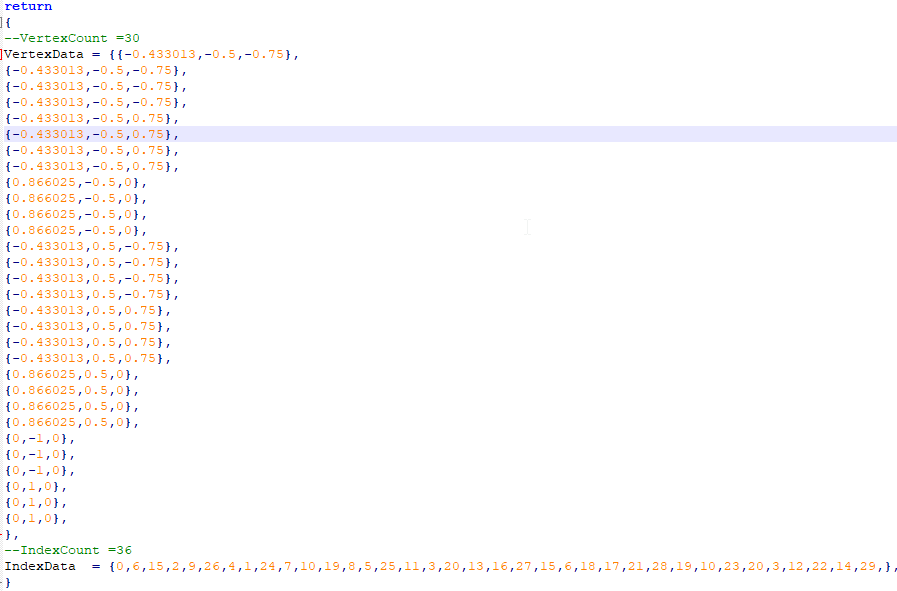
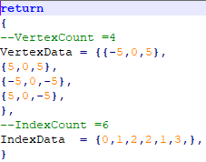
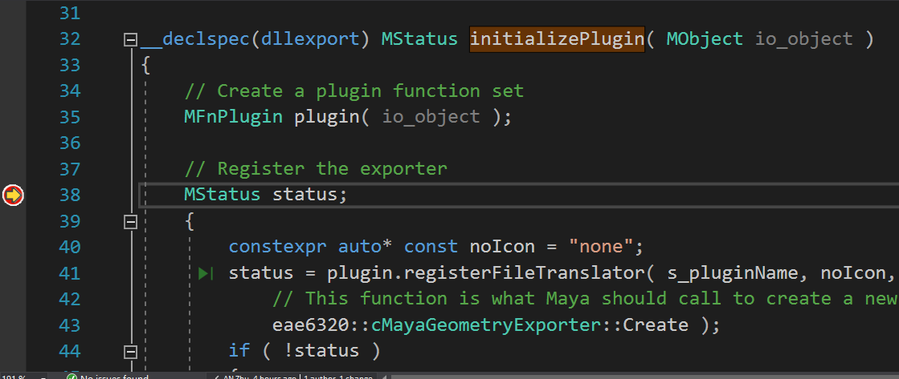

We add Maya MayaGeometryExporter to export files from Maya to our game. No reference had to add to MayaGeometryExporter project, Because it does not depend other projects
No other projects depends on MayaGeometryExporter.
I am getting some problem with this exporter exporting geoemtries

this is an exported very low-poly sphere file. Notice there are a lot of repeated vertices and the first two vertices defined by the index data are of the same point.
On the other hand It could export the plane correctly.(As shown below) And it is drawn as the floor in the application.

I did not export unused data cause I could not fix the prvious problem

generating those files by programs
The lua loading function will print an error if the geoemtries have more than 1000 vertices